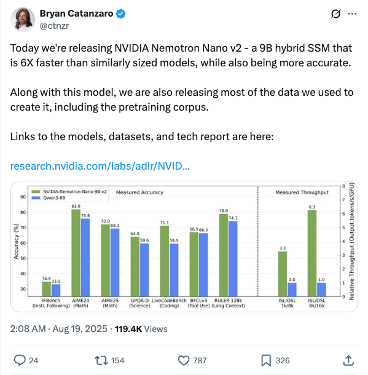
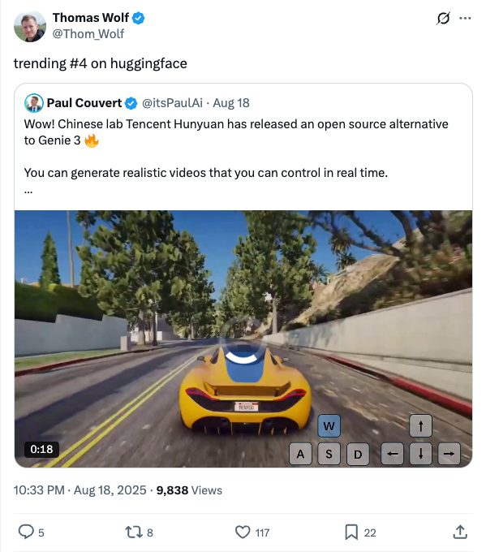
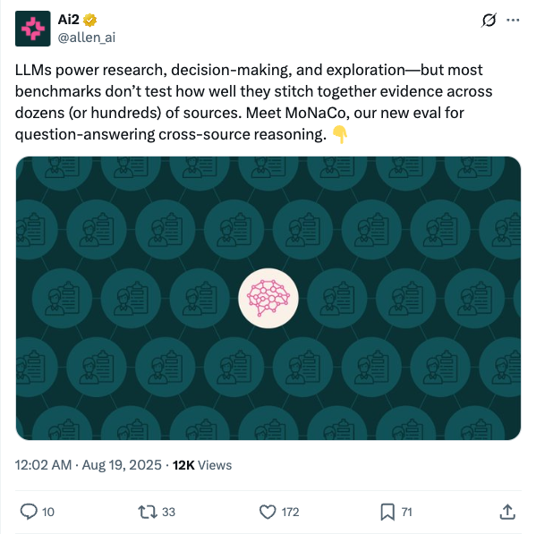
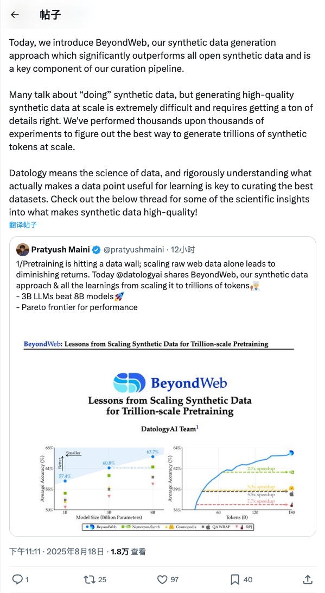
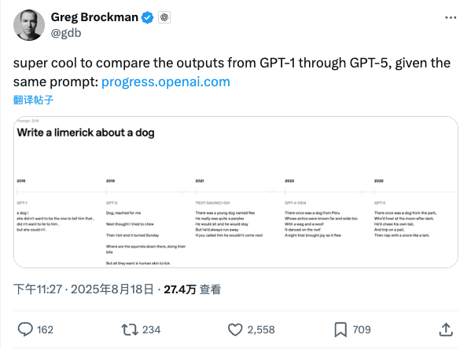
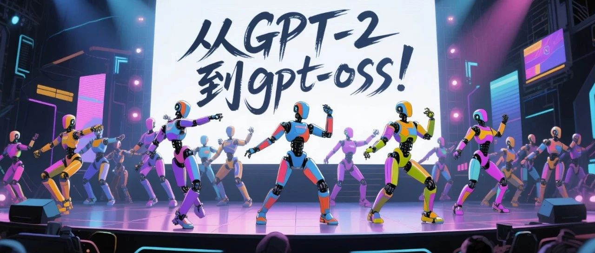
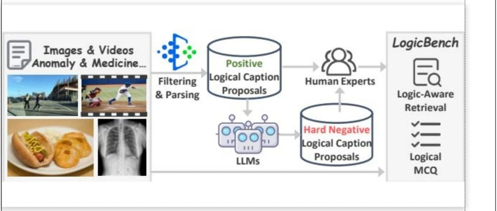

Twitter
ctnzr_NVIDIA Releases Nemotron Nano v2 Model and Dataset
Published: 2025-08-18T18:08:00.000Z

Bryan Catanzaro of NVIDIA announced the release of Nemotron Nano v2, a 9B hybrid SSM that is 6 times faster and more accurate than similarly sized models. Alongside the model, NVIDIA is also releasing most of the data used for its creation, including the pretraining corpus. Links to the models, datasets, and the technical report are provided, fostering advancements in the AI community.
Thom_Wolf_Tencent Hunyuan Releases Open-Source Real-time Video Generation Model
Published: 2025-08-18T14:33:05.000Z

Prominent AI researcher Thomas Wolf highlighted that Tencent Hunyuan Lab has released an open-source alternative to "Genie 3," a model capable of generating realistic, real-time controllable videos. Key features include long-term consistency and no need for expensive rendering, trained on over 1 million gameplay recordings, marking a significant advancement in the video generation field.
GoogleLabs_Flow Reaches 100M Videos, AI Credits Doubled, New Account Launched
Published: 2025-08-18T16:03:21.000Z
Google Labs announced that its Flow platform has successfully generated over 100 million videos, demonstrating significant user engagement and adoption. As a token of appreciation for the continued enthusiasm and support from its community, Google Labs is rolling out two important updates: AI credits for all Ultra users will now be doubled, providing enhanced access to generative capabilities. Additionally, a new dedicated account, @FlowbyGoogle, has been launched to serve as a central source for Flow tips, news, and community engagement. This strategic move aims to further empower users and foster the growth of the Flow ecosystem.
allen_ai_Introducing MoNaCo: A New Benchmark for LLM Cross-Source Reasoning
Published: 2025-08-18T16:02:52.000Z

Allen AI introduces MoNaCo, a novel evaluation benchmark designed to assess the cross-source reasoning capabilities of Large Language Models (LLMs). MoNaCo aims to test LLMs' ability to synthesize evidence from dozens or even hundreds of sources, addressing a critical gap in current benchmarks that often overlook complex information aggregation. This new evaluation will help advance LLMs' utility in research, decision-making, and exploration by providing a more comprehensive measure of their performance.
arimorcos_Datology Launches BeyondWeb Synthetic Data Approach, Enhancing LLM Training Efficiency
Published: 2025-08-18T15:11:07.000Z

Ari Morcos of Datology AI announced the launch of BeyondWeb, a synthetic data generation approach that significantly outperforms existing open synthetic data and is a key component of their data curation pipeline. BeyondWeb addresses the challenge of generating high-quality synthetic data at scale, optimized through thousands of experiments to produce trillions of synthetic tokens. This method helps overcome the "data wall" in large language model pretraining, enabling 3-billion-parameter LLMs to surpass 8-billion-parameter models, offering new insights into data science.
gdb_Showcasing GPT Series Model Evolution Comparison
Published: 2025-08-18T15:27:00.000Z

OpenAI co-founder Greg Brockman highlighted a significant development, allowing users to compare the outputs of GPT-1 through GPT-5 models using the same prompt. This initiative aims to visually demonstrate OpenAI's iterative and remarkable progress in large language model technology, revealing performance differences and evolutionary trajectories across different model generations, providing a clear perspective on AI development.
wechat
Unbelievable! AI Agents Now Form '100-Strong' Teams, Completing 5 Complex Tasks in Parallel in 3 Minutes with Dynamic Modification
Published: 2025-08-18T09:13:27.000Z
Baidu Wenku and Baidu Netdisk have jointly launched GenFlow2.0, the world's first full-platform universal AI Agent. Its core innovation lies in orchestrating over a hundred specialized AI Agents to concurrently handle 5-6 complex multi-modal tasks, completing them in an average of three minutes, while allowing real-time intervention and demand modification throughout the process. GenFlow2.0 deeply integrates vast public and private domain data from Baidu Wenku, Netdisk, and Academic, ensuring seamless connection between production resources and tools, significantly enhancing content generation quality and efficiency. Technically, it is built upon the Cangzhou OS and MoE architecture, employing a Multi-Agent collaborative framework with intelligent scheduling. The platform aims to establish an "omnipotent and ubiquitous" AI productivity, redefining the boundaries of general AI Agents. Through an open ecosystem and collaborations with hardware manufacturers, such as Honor, GenFlow2.0 seeks to achieve deep integration of AI with diverse user scenarios, thereby building an unparalleled ecological moat.
ByteDance Seed Open-Sources M3-Agent: A Multimodal Agent with Human-like Long-Term Memory for Auditory and Visual Perception
Published: 2025-08-18T16:19:17.000Z
ByteDance Seed has unveiled and open-sourced M3-Agent, an innovative multimodal agent framework designed with human-like long-term memory capabilities. This agent can process real-time visual and auditory inputs, continuously building and updating its semantic knowledge base. M3-Agent operates through parallel memory and control processes, employing reinforcement learning for multi-round reasoning and iterative memory retrieval, demonstrating significant performance improvements over existing baseline models, including those based on commercial LLMs like Gemini-1.5-Pro and GPT-4o. To rigorously evaluate its memory effectiveness and reasoning abilities, the team also developed and open-sourced M3-Bench, a new long-video question-answering benchmark. Experimental results show M3-Agent's superior performance across various benchmarks, particularly excelling in human understanding and cross-modal reasoning, thus offering a novel paradigm for enhancing the long-term consistency and intelligence of multimodal agents.
From GPT-2 to gpt-oss: Analyzing the Architectural Advances, And How They Stack Up Against Qwen3
Published: 2025-08-18T05:11:20.000Z

This article provides an in-depth analysis of OpenAI's gpt-oss open models, tracing their evolution from GPT-2. It meticulously details the architectural innovations and optimizations of gpt-oss-20b and 120b, including the removal of Dropout, adoption of RoPE, SwiGLU, Mixture-of-Experts (MoE), Grouped Query Attention (GQA), and sliding window attention. The piece also conducts a comparative analysis with Qwen3, discussing differences in model width vs. depth, expert configurations, and attention biases. Furthermore, it highlights MXFP4 quantization optimization enabling single-GPU operation, and examines gpt-oss's training profile, inference workload control, and benchmark performance. The analysis concludes that gpt-oss's performance is nearing that of top proprietary models, signaling a significant positive impact on the development of open-weight models.
Prompts: The Ultimate Weapon for Large Models, Driving 49% Performance Surge in Maryland-MIT Research
Published: 2025-08-18T14:01:09.000Z
A groundbreaking study by researchers from the University of Maryland, MIT, and Stanford reveals that prompt optimization is a critical, often underestimated, factor in boosting AI performance, contributing nearly as much as model upgrades themselves. Their research, using DALL-E 2 and DALL-E 3, demonstrated that while model advancements accounted for 51% of performance gains, an impressive 49% surge was attributed to user-driven "prompt adaptation." This signifies that the ability of users to dynamically adjust and refine prompts in response to evolving model capabilities is paramount for fully unleashing the economic value and potential of large generative models. The findings underscore the enduring importance of human ingenuity in prompt engineering, suggesting that while automation has its place, human-centric prompt design remains indispensable for achieving optimal outcomes with advanced AI systems.
August 18th arXiv: LogicCLIP and Other Cutting-Edge AI Research
Published: 2025-08-18T10:41:27.000Z

This article summarizes multiple cutting-edge artificial intelligence research findings published on arXiv on August 18th. Sun Yat-sen University and National University of Singapore proposed LogicCLIP, significantly enhancing the logical understanding capabilities of vision-language models. Several studies focused on multimodal large models, covering applications in video temporal grounding, 3D visual understanding, and code generation. In generative AI, achievements include audio-driven portrait animation, cinematic-style video generation, and specific-style image generation. New methods like Polaris, ImagiDrive, and VeteranAD emerged in the autonomous driving domain. In computer vision, advancements include efficient camera parameter estimation and robust object tracking. Progress was also made in medical image analysis. Collectively, these studies showcase the latest breakthroughs and advancements in current AI across multimodal understanding, generation, autonomous driving, and visual reasoning.
ToonComposer: Streamlining Cartoon Production with Generative Post-Keyframing
Published: 2025-08-18T16:19:17.000Z
ToonComposer introduces a novel generative post-keyframing model that streamlines cartoon production by automating tedious in-betweening and coloring tasks through a unified "post-keyframing" pipeline. Built upon the powerful DiT architecture, this model leverages innovative sparse sketch injection and regional control strategies. It requires only sparse keyframe sketches and a single colored reference image to generate high-quality, stylistically consistent cartoon video sequences. ToonComposer significantly reduces the need for laborious frame-by-frame sketches, thereby mitigating error accumulation across different production stages. Furthermore, it incorporates a novel Spatial Low-rank Adapter (SLRA) to efficiently preserve crucial temporal priors. Extensive experimental results demonstrate ToonComposer's superior performance over existing methods in terms of visual fidelity, motion coherence, and overall production efficiency, presenting an effective and flexible solution for modern cartoon creation.
GitHub
What is Archon?
Published: 2025-08-18T18:59:49Z

Archon functions as a central command center and Model Context Protocol (MCP) server specifically designed for AI coding assistants. It significantly boosts AI-driven coding efficiency by providing a custom knowledge base and robust task management capabilities. Key features include intelligent web crawling, comprehensive document processing, and advanced Retrieval-Augmented Generation (RAG) strategies. Archon supports multiple Large Language Models (LLMs) such as OpenAI, Ollama, and Google Gemini. Built on a scalable microservices architecture, it ensures real-time updates and seamless collaboration. This platform empowers AI agents to access relevant documentation, perform intelligent searches, and effectively manage project tasks, establishing itself as an indispensable tool for context management in AI-assisted development workflows.
Finally, LLM agents that actually follow instructions
Published: 2025-08-18T17:13:11Z

Parlant is an innovative AI agent framework designed to address the inconsistency of Large Language Models (LLMs) in following instructions and handling edge cases. It adopts a "teach principles, not scripts" approach, ensuring LLM agents reliably adhere to predefined rules and guidelines, leading to predictable and consistent behavior. The framework offers enterprise-grade features such as natural language rule definition, dynamic guideline matching, robust tool integration, conversation analytics, and built-in guardrails. It is well-suited for industries with high compliance and accuracy demands, including financial services, healthcare, e-commerce, and legal tech, empowering developers to build production-ready AI agents.
Build a Large Language Model (From Scratch)
Published: 2025-08-18T23:58:46Z

This GitHub repository provides code for developing, pretraining, and finetuning GPT-like large language models from scratch, serving as the official code repository for the book "Build a Large Language Model (From Scratch)". The project aims to help readers deeply understand the internal workings of LLMs by coding them from the ground up, mirroring the approach used in building large-scale foundational models. The code is implemented in PyTorch, without reliance on external LLM libraries, and is designed to run on conventional laptops while leveraging GPUs if available. Furthermore, the repository includes functionalities for loading pretrained model weights for finetuning, along with comprehensive chapter code, exercise solutions, and bonus learning materials, making it a valuable resource for learning and practicing LLM development.
🌟 Awesome LLM Apps
Published: 2025-08-18T02:24:54Z

The "Awesome LLM Apps" GitHub repository is a curated collection of Large Language Model (LLM) applications, showcasing diverse implementations built with advanced techniques such as Retrieval Augmented Generation (RAG), AI Agents, Multi-agent Teams, MCP (Multimodal Control Plane), and Voice Agents. It features applications utilizing prominent models from OpenAI, Anthropic, and Google, alongside open-source alternatives like DeepSeek, Qwen, and Llama that can be run locally. The project aims to provide practical examples of LLM applications across various domains, including code analysis, data processing, finance, healthcare, and entertainment, while fostering the growth of the open-source ecosystem.
🔥 The Unified Backend Framework That Eliminates Runtime Fragmentation 🔥
Published: 2025-08-19T00:51:05Z

Motia is a unified backend framework designed to eliminate runtime fragmentation in modern software engineering. It integrates APIs, background jobs, workflows, and AI agents into a single, coherent system, offering shared observability and a consistent developer experience. Motia supports multiple languages like JavaScript, TypeScript, and Python within the same codebase, simplifying backend development through its core "Step" concept. It provides an event-driven architecture, built-in fault tolerance, unified state management, and automated observability, significantly enhancing development efficiency and system scalability by consolidating functionalities that previously required multiple frameworks.
Bytebot: Open-Source AI Desktop Agent
Published: 2025-08-13T20:08:35Z

Bytebot is an open-source AI desktop agent that provides AI with a complete virtual desktop environment, enabling it to operate a computer like a human and execute complex, multi-step tasks across various applications. It supports using any desktop application, managing files, processing documents (PDFs, spreadsheets), and logging into websites. Its core components include a virtual desktop, an AI agent, a task interface, and APIs, supporting major AI models like Anthropic, OpenAI, and Google Gemini. Bytebot is applicable for business process automation, development and testing, and research and analysis, offering self-hosted deployment options for data privacy and full control.
huggingface
SSRL: Self-Search Reinforcement Learning
Published: 2025-08-14T17:46:01.000Z

We investigate the potential of large language models (LLMs) to serve as
efficient simulators for agentic search tasks in reinforcement learning (RL),
thereby reducing dependence on costly interactions with external search
engines. To this end, we first quantify the intrinsic search capability of LLMs
via structured prompting and repeated sampling, which we term Self-Search. Our
results reveal that LLMs exhibit strong scaling behavior with respect to the
inference budget, achieving high pass@k on question-answering benchmarks,
including the challenging BrowseComp task. Building on these observations, we
introduce Self-Search RL (SSRL), which enhances LLMs' Self-Search capability
through format-based and rule-based rewards. SSRL enables models to iteratively
refine their knowledge utilization internally, without requiring access to
external tools. Empirical evaluations demonstrate that SSRL-trained policy
models provide a cost-effective and stable environment for search-driven RL
training, reducing reliance on external search engines and facilitating robust
sim-to-real transfer. We draw the following conclusions: 1) LLMs possess world
knowledge that can be effectively elicited to achieve high performance; 2) SSRL
demonstrates the potential of leveraging internal knowledge to reduce
hallucination; 3) SSRL-trained models integrate seamlessly with external search
engines without additional effort. Our findings highlight the potential of LLMs
to support more scalable RL agent training.
Thyme: Think Beyond Images
Published: 2025-08-15T17:59:49.000Z

Following OpenAI's introduction of the ``thinking with images'' concept,
recent efforts have explored stimulating the use of visual information in the
reasoning process to enhance model performance in perception and reasoning
tasks. However, to the best of our knowledge, no open-source work currently
offers a feature set as rich as proprietary models (O3), which can perform
diverse image manipulations and simultaneously enhance logical reasoning
capabilities through code. In this paper, we make a preliminary attempt in this
direction by introducing Thyme (Think Beyond Images), a novel paradigm for
enabling MLLMs to transcend existing ``think with images'' approaches by
autonomously generating and executing diverse image processing and
computational operations via executable code. This approach not only
facilitates a rich, on-the-fly set of image manipulations (e.g., cropping,
rotation, contrast enhancement) but also allows for mathematical computations,
all while maintaining high autonomy in deciding when and how to apply these
operations. We activate this capability through a two-stage training strategy:
an initial SFT on a curated dataset of 500K samples to teach code generation,
followed by a RL phase to refine decision-making. For the RL stage, we manually
collect and design high-resolution question-answer pairs to increase the
learning difficulty, and we propose GRPO-ATS (Group Relative Policy
Optimization with Adaptive Temperature Sampling), an algorithm that applies
distinct temperatures to text and code generation to balance reasoning
exploration with code execution precision. We conduct extensive experimental
analysis and ablation studies. Comprehensive evaluations on nearly 20
benchmarks show that Thyme yields significant and consistent performance gains,
particularly in challenging high-resolution perception and complex reasoning
tasks.
BeyondWeb: Lessons from Scaling Synthetic Data for Trillion-scale
Pretraining
Published: 2025-08-14T17:55:47.000Z

Recent advances in large language model (LLM) pretraining have shown that
simply scaling data quantity eventually leads to diminishing returns, hitting a
data wall. In response, the use of synthetic data for pretraining has emerged
as a promising paradigm for pushing the frontier of performance. Despite this,
the factors affecting synthetic data quality remain poorly understood. In this
work, we introduce BeyondWeb, a synthetic data generation framework that
produces high-quality synthetic data for pretraining. BeyondWeb significantly
extends the capabilities of traditional web-scale datasets, outperforming
state-of-the-art synthetic pretraining datasets such as Cosmopedia and
Nemotron-CC's high-quality synthetic subset (Nemotron-Synth) by up to 5.1
percentage points (pp) and 2.6pp, respectively, when averaged across a suite of
14 benchmark evaluations. It delivers up to 7.7x faster training than open web
data and 2.7x faster than Nemotron-Synth. Remarkably, a 3B model trained for
180B tokens on BeyondWeb outperforms an 8B model trained for the same token
budget on Cosmopedia. We also present several insights from BeyondWeb on
synthetic data for pretraining: what drives its benefits, which data to
rephrase and how, and the impact of model size and family on data quality.
Overall, our work shows that there's no silver bullet for generating
high-quality synthetic pretraining data. The best outcomes require jointly
optimizing many factors, a challenging task that requires rigorous science and
practical expertise. Naive approaches can yield modest improvements,
potentially at great cost, while well-executed methods can yield transformative
improvements, as exemplified by BeyondWeb.
XQuant: Breaking the Memory Wall for LLM Inference with KV Cache
Rematerialization
Published: 2025-08-14T06:52:38.000Z

Although LLM inference has emerged as a critical workload for many downstream
applications, efficiently inferring LLMs is challenging due to the substantial
memory footprint and bandwidth requirements. In parallel, compute capabilities
have steadily outpaced both memory capacity and bandwidth over the last few
decades, a trend that remains evident in modern GPU hardware and exacerbates
the challenge of LLM inference. As such, new algorithms are emerging that trade
increased computation for reduced memory operations. To that end, we present
XQuant, which takes advantage of this trend, enabling an order-of-magnitude
reduction in memory consumption through low-bit quantization with substantial
accuracy benefits relative to state-of-the-art KV cache quantization methods.
We accomplish this by quantizing and caching the layer input activations X,
instead of using standard KV caching, and then rematerializing the Keys and
Values on-the-fly during inference. This results in an immediate 2times
memory savings compared to KV caching. By applying XQuant, we achieve up to
sim 7.7times memory savings with <0.1 perplexity degradation compared to
the FP16 baseline. Furthermore, our approach leverages the fact that X values
are similar across layers. Building on this observation, we introduce
XQuant-CL, which exploits the cross-layer similarity in the X embeddings for
extreme compression. Across different models, XQuant-CL attains up to
10times memory savings relative to the FP16 baseline with only 0.01
perplexity degradation, and 12.5times memory savings with only 0.1
perplexity degradation. XQuant exploits the rapidly increasing compute
capabilities of hardware platforms to eliminate the memory bottleneck, while
surpassing state-of-the-art KV cache quantization methods and achieving
near-FP16 accuracy across a wide range of models.
FantasyTalking2: Timestep-Layer Adaptive Preference Optimization for
Audio-Driven Portrait Animation
Published: 2025-08-15T06:43:46.000Z

Recent advances in audio-driven portrait animation have demonstrated
impressive capabilities. However, existing methods struggle to align with
fine-grained human preferences across multiple dimensions, such as motion
naturalness, lip-sync accuracy, and visual quality. This is due to the
difficulty of optimizing among competing preference objectives, which often
conflict with one another, and the scarcity of large-scale, high-quality
datasets with multidimensional preference annotations. To address these, we
first introduce Talking-Critic, a multimodal reward model that learns
human-aligned reward functions to quantify how well generated videos satisfy
multidimensional expectations. Leveraging this model, we curate Talking-NSQ, a
large-scale multidimensional human preference dataset containing 410K
preference pairs. Finally, we propose Timestep-Layer adaptive multi-expert
Preference Optimization (TLPO), a novel framework for aligning diffusion-based
portrait animation models with fine-grained, multidimensional preferences. TLPO
decouples preferences into specialized expert modules, which are then fused
across timesteps and network layers, enabling comprehensive, fine-grained
enhancement across all dimensions without mutual interference. Experiments
demonstrate that Talking-Critic significantly outperforms existing methods in
aligning with human preference ratings. Meanwhile, TLPO achieves substantial
improvements over baseline models in lip-sync accuracy, motion naturalness, and
visual quality, exhibiting superior performance in both qualitative and
quantitative evaluations. Ours project page:
https://fantasy-amap.github.io/fantasy-talking2/
StyleMM: Stylized 3D Morphable Face Model via Text-Driven Aligned Image
Translation
Published: 2025-08-15T04:29:46.000Z

We introduce StyleMM, a novel framework that can construct a stylized 3D
Morphable Model (3DMM) based on user-defined text descriptions specifying a
target style. Building upon a pre-trained mesh deformation network and a
texture generator for original 3DMM-based realistic human faces, our approach
fine-tunes these models using stylized facial images generated via text-guided
image-to-image (i2i) translation with a diffusion model, which serve as
stylization targets for the rendered mesh. To prevent undesired changes in
identity, facial alignment, or expressions during i2i translation, we introduce
a stylization method that explicitly preserves the facial attributes of the
source image. By maintaining these critical attributes during image
stylization, the proposed approach ensures consistent 3D style transfer across
the 3DMM parameter space through image-based training. Once trained, StyleMM
enables feed-forward generation of stylized face meshes with explicit control
over shape, expression, and texture parameters, producing meshes with
consistent vertex connectivity and animatability. Quantitative and qualitative
evaluations demonstrate that our approach outperforms state-of-the-art methods
in terms of identity-level facial diversity and stylization capability. The
code and videos are available at
[kwanyun.github.io/stylemm_page](kwanyun.github.io/stylemm_page).